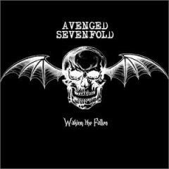
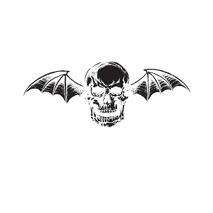
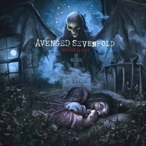
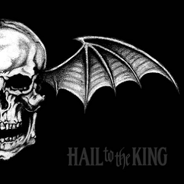
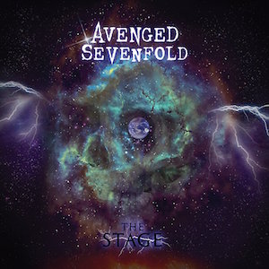

My name is Dalton I am a big fan of the band Avenged Sevenfold.
Avenged Sevenfold is a hard rock band from Huntington Beach, California, formed in 1999. The band consistes of vocalist Matt Shadows, rhythm guitarist Zacky Vengence, lead guitarist Synyster Gates, bass guitarist Johnny Christ, drummer Jimmy "The Rev" Sullivan(until his death in 2009). After The Rev's death he was replaced by former drummer of the band Dream Theater for their 2010 album and tour until they hired Arin Ilejay from 2011-2015 and Brooks Wackerman from 2016 to present. The band has released 7 studio albums and despite going through a lot of hardships plan to release an album sometime during 2022.

| Album Title | Year of Release | Album Cover |
|---|---|---|
| Sounding the Seventh Trumpet | 2001 | |
| Waking the Fallen | 2003 |  |
| City of Evil | 2005 | |
| Avenged Sevenfold | 2007 |  |
| Nightmare | 2010 |  |
| Hail to the King | 2013 |  |
| The Stage | 2016 |  |